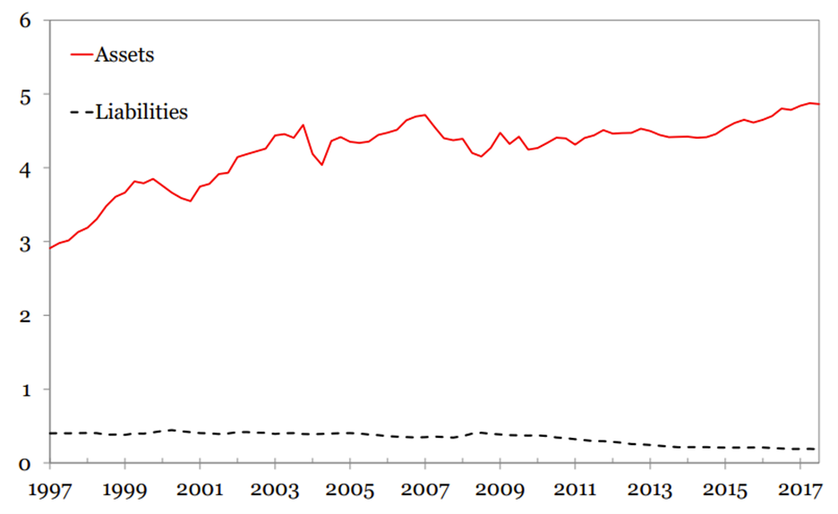
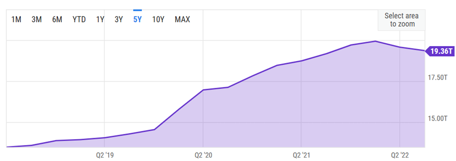
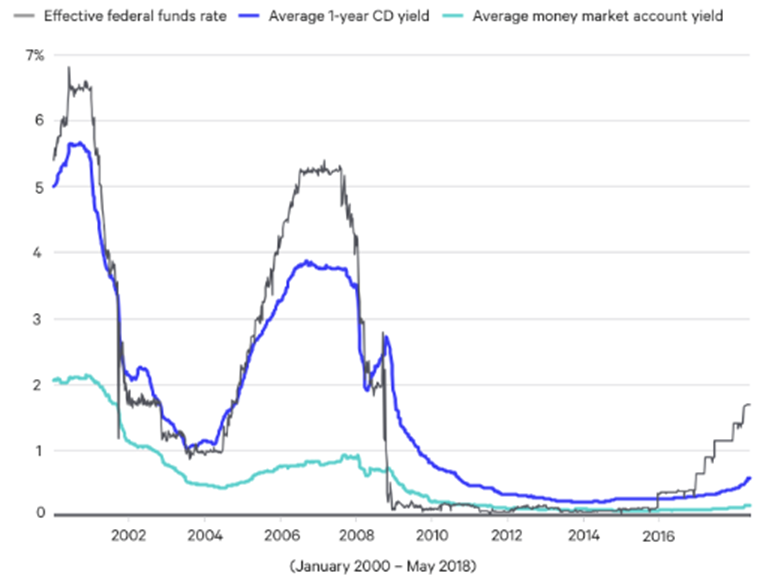
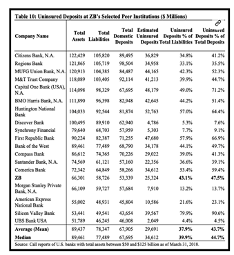

Abstract:
The event surrounding Silicon Valley Bank (SVB) involved the bank's announcement of a $1.8 billion loss due to a rise in interest rates and subsequent panic in the market. SVB's unique customer base and its heavy investment in long-term bonds and mortgage-backed securities contributed to its liquidity problems. The California Department of Financial Protection and Innovation (DFPI) took over SVB, designating the Federal Deposit Insurance Corporation (FDIC) as the receiver of SVB. This event triggered concerns about the overall US banking industry and highlighted the potential risks faced by small and medium-sized banks with high customer concentration. In the last section, we discuss the reactions and forward-looking notes from regulators perspectives.
Content:
3. Comparison between “Lehman Moment” and SVB's Bankruptcy
4. Banking Business Model: How Banks Manage Their Risks?
- 4.1 Lend Long and Borrow Short
- 4.2 Deposit Increase
- 4.3 Interest Rate Risk in Long-term Loans
- 4.4 Deposit Franchise
- 4.5 When Run Happens
1. Introduction
On March 8-9th, Silicon Valley Bank (SVB) announced that it had sold a $21 billion securities portfolio, which resulted in a loss of $1.8 billion due to the significant rise in interest rates since it was purchased. Additionally, SVB planned to raise $2.25 billion through the sale of common and preferred stocks. As SVB's clients were mainly high-tech and life science companies in Silicon Valley, the information released by SVB caused panic in the market about its liquidity and asset quality, leading to a more than 60% drop in its stock price on the same day, the largest decline since 1998, with a market value loss of nearly $10 billion, followed by a trading suspension. As SVB was not a small bank and had a stable daily operation, the event even triggered a panic about the overall US banking industry. Large bank stocks such as JPMorgan, Citigroup, Bank of America, and Wells Fargo all experienced significant declines on the same day, with the Philadelphia Bank Index plunging by 7.7%.
One day later, on March 10th, the California Department of Financial Protection and Innovation (DFPI) announced that under Section 592 of the California Financial Code, SVB had been taken over by the DFPI and designated the Federal Deposit Insurance Corporation (FDIC) as the receiver of SVB. The FDIC took control of SVB by creating a new entity, Santa Clara Savings Insurance National Bank (DINB), and accepted all of SVB's deposits. As an SVB member of the Federal Reserve System, it became the first FDIC-insured institution to go bankrupt since Kansas's Almena State Bank in October 2020.
1. OReasons for Market Panic
First, SVB's announcement and bankruptcy exceeded market expectations, which was the starting point of the panic. Although the market had experienced the bankruptcy of Silvergate Bank before, Silvergate's bankruptcy was mainly due to the risk exposure of cryptocurrency assets and had no direct association with SVB's traditional business. Therefore, the market was unprepared for SVB's liquidity crisis, and the sudden information shock caused concerns. Subsequently, SVB's bankruptcy and takeover increased the level of concern.
Second, the current high-interest-rate environment and the continuous hawkish stance of the Federal Reserve were necessary conditions for the rapid spread of market panic. As a relatively stable daily operation and a top 20 bank in the United States, SVB's liquidity problems, severe mismatches in maturity, and significant losses in buying high-priced securities and passively selling in a high-interest-rate environment disappointed the market. Many customers claimed to withdraw their funds, and SVB's stock was sold, even shorted. The sharp drop in SVB's stock price made its equity financing plan impossible to carry out, which exacerbated the negative feedback loop. The market also began to worry about other banks' potential risks, leading to the rapid expansion and spread of panic.
Third, although the Lehman crisis event of 2008 is nearly 15 years ago, the enormous impact it brought still lingers in the minds of US and global investors. SVB's announcement and subsequent bankruptcy, although intended to ease its own liquidity crisis, and its takeover by regulatory authorities to prevent risk from spreading, still triggered fears about the 2008 "Lehman moment" in the market. Under the combination of these old wounds and new events, market panic further expanded and caused dramatic fluctuations in US stocks, even leading to a significant decline in US bond yields.
2. Liquidity Problems in SVB
According to year-end data in 2022, SVB's total assets ranked 16th in the United States, making it a medium-sized bank. Although SVB operates traditional banking deposit and loan businesses, its customer base is very unique, primarily consisting of PE/VC, high-tech companies, startups, and employees of related companies, with PE/VC being the largest proportion. SVB's operational advantage in the venture capital field is obvious. Since the deposit and loan sides of its funds are mainly composed of venture capital companies and individuals, SVB's business, although traditional, is essentially more like a venture capital financial company.
There are two main factors that have contributed to SVB's liquidity problems:
First, against the backdrop of the massive easing policies of the Federal Reserve in 2020-2021, SVB absorbed a large amount of low-cost funds from the venture capital circle and used these funds to invest in long-term US government bonds and mortgage-backed securities (MBS). At that time, risk-free interest rates were at an all-time low, so the cost of SVB's investments was historically high. With the arrival of high inflation and the Federal Reserve's tightening measures, risk-free interest rates have risen from 0 to nearly 5%, causing severe losses in SVB's US government bond and MBS investments. Coupled with the upward trend in deposit interest rates, which are generally higher than 4%, and the downward trend in loan interest rates caused by the surge in interest rates, in the case of severe mismatch in the maturity of existing funds, SVB has encountered a liquidity crunch.
Second, although the above problem is serious, the path and trend are predictable and should not cause such a sudden and severe reaction. The intensification of the event was caused by the bankruptcy of Silvergate Bank a few days ago. Since Silvergate Bank's customer base is related to the field of cryptocurrency assets and has a high degree of overlap with Silicon Valley's venture capital circle, the increased demand for withdrawals by Silvergate Bank's main customer base after its bankruptcy has intensified the liquidity stress faced by SVB, forcing SVB to sell assets and bear losses, as well as carry out large-scale equity financing plans, which in turn led to a panic in the market.
3. Comparison between “Lehman Moment” and SVB's Bankruptcy
Many investors have compared SVB's bankruptcy to the "Lehman moment" of 2008, but there are significant differences in the path leading to the global financial crisis caused by the subprime mortgage crisis in 2007-2008. In 2008, the problem was mainly caused by the asset side of financial institutions, that is, the impact of the sharp decline in subprime loans and related derivative securities, which triggered negative feedback. This round of crisis, however, was caused by the liability side of financial institutions, that is, the risk of coping with the surge in deposit interest rates and deposit withdrawals by customers. The occurrence of such risks has forced related financial institutions to sell securities on their asset side to realize huge floating losses, triggering negative feedback.
So, what impact will the SVB bankruptcy have, and how will it affect the US and global banking industry? This is the most pressing issue in the current market, and we will give a simulation based on the two major catalytic factors of SVB's bankruptcy mentioned above.
The SVB bankruptcy event is the result of the combined impact of the macro interest rate environment and the special customer base in the past three years, and has its particularities. However, we know that specificity always implies generality, and this generality is the change in the macro interest rate environment and its derivative impact. Under the impact of the current market panic, relevant potential risks cannot be completely ignored.
In 2020, under the outbreak of the pandemic, the unprecedentedly loose policies of the Federal Reserve brought extremely low-cost dollar liquidity to the United States and even the world. However, under the high inflation environment in 2022, liquidity tightened sharply, causing financial institutions that absorbed a large amount of deposits in the past two years and simultaneously invested in long-term US dollar bonds to suffer huge floating losses in the past year. In order to avoid realizing these losses, they can only hold them until maturity, which places extremely high demands on financial institutions' liquidity management capabilities. If these financial institutions also face sudden withdrawal demands from their main customer base, it is easy to repeat similar events to the SVB bankruptcy.
From this perspective, large US banking groups have a high degree of customer diversification, limited association with the venture capital circle, ample liquidity, strong management capabilities, and relatively controllable risks. However, some small and medium-sized banks, especially those with a high degree of dependence on a single area (or circle) of customer groups, weak liquidity management capabilities, and serious mismatch in the maturity of assets, may face significant risks under subsequent shock waves. From the market reaction, financial institutions such as First Horizon National Corporation (FHN), First Republic Bank (FRC), and Western Alliance Bancorporation (WAL) may face greater risks.
In addition, European banking institutions may also face potential risks of concentrated withdrawals of US dollar deposits by their customer base, while emerging markets such as Asia, Africa, and Latin America mainly face potential impacts of the rise in receivables due to overseas customer fund flow shocks, the depreciation of overseas assets, and structural shortages of US dollar liquidity.
4. Banking Business Model: How Banks Manage Their Risks?
4.1 Lend Long and Borrow Short
The main business model of banks is lending long and borrowing short. Lending long means that the bank can make loans for firms or households with a long period. These long-term loans usually have a fixed interest rate with its principal paid back to the bank at the maturity date. These loans are regarded as assets of the bank. Borrowing short means banks can finance themselves by issuing short-term debts. These debts can be drawn back at any time, with saving deposits a major type. These short-term loans are regarded as the liabilities of banks. This business model makes the bank an intermediary to transform the maturity.
Duration is a term to measure how long it takes for a bondholder to be repaid a bond’s price by the bond’s total cash flows. It reflects the sensitivity of a bond’s price when interest rates change. The duration of long-term bonds is larger than short-term loans (for saving deposits, it is close to 0). Therefore, there will be duration mismatch inside the banking business model.
Figure 1: Estimated duration of U.S. bank assets and liabilities
 Source: Why do banks invest in MBS?4.2 Deposit Increase
During the outbreak of the pandemic, large deposit flows in banks. The first reason is that during times of crisis, people tend to flow into safety assets. Investors prefer to sell their risky assets and tend to more safer deposits. Secondly, due to government stimulus programs, large amounts of money are distributed to small businesses and households, most of which ends up in the bank’s savings account. Thirdly, with the Fed continuously hiking the Fed Funds Rates, people tend to save more money in order to get a higher return.
Figure 2: US Banks Total Deposits
 Source: Yahoo FinanceBecause of COVID, firms turn to a strategy that slows the pace for investment, which decreases the long-term loan demand. In this case, the deposit inflows far exceed the loan outflow, thus making banks seek more opportunities for long-term, fixed-rate investments. These loans are with higher duration. Previously the average duration of the bank was around 3.9, but after including more long-term loans, it reached a level of 5.7.
4.3 Interest Rate Risk in Long-term Loans
However, the long-term loans bear a large amount of interest rate risk. The higher the yield, the lower the price of the loans. With the continuous increase of the interest rate, banks suffer a loss on the long-term loans. The loss from an increase in interest rate can be approximated by the duration times the interest rate changes. Since the duration increases during COVID, every time the interest rate increases, the capital loss increases compared to its pre-COVID level.
4.4 Deposit Franchise
During the normal time when the Fed hikes the interest rate, banks can successfully hedge the interest rate risks using its deposits, because the income for deposits can offset the capital loss on long-term loans. Banks have a market power which means that depositors would not choose to leave a bank even if they can get a better rate elsewhere. The market power allows the banks to offer a lower than market interest rate with its depositors. Even with the rise in interest, banks can still keep the borrow rate at a lower level. By deposit franchise, banks can save considerable interest cost which can usually offset their capital loss.
Figure 3: Compare deposit rate and fed funds rate
 Source: Bankrate4.5 When Run Happens
However, the hedge works only if banks can maintain their depositors. To ensure the hedge, banks should have a good estimate of its deposit beta and its deposit base.
If a run happens, the value of the deposit franchise goes to zero, making the hedging stop working. This is what happened to SVB. SVB may mismanage their interest rate hedging and misjudge their market power over their depositors.
5. Regulation
This section focuses on the regulatory intervention after SVB bankruptcy and discusses the broader implications for regulatory intervention with respect to the macro environment. In general, the purpose of regulatory intervention to bankruptcy of bank is to constraint the potential rippling effect from a single financial intermediary to an entangled chain of financial intermediaries. From the regulation perspective, it needs to balance the financial stability (monitoring and intervening core financial intermediaries) and the economic well-being (in current context, bringing down the inflation). At a quick glance, the economic well-being seems to outweigh the importance of intervening a single financial firm, but since the financial crisis in 2008, the financial sectors have been more interrelated due to more complex and interlocked asset classes, the intervention of a single firm seems to be necessary and important if it’s a core node in the complex and entangled network of financial systems.
Evidence has shown that the regulation has been long noticed the enormous risk bore by the SVB. With this, a natural question to ask is if the regulator has noticed it long ago, why can’t it step in sooner? A quick response to this heuristically is the fact that the Fed can only step in when certain threshold has been breached. In the case of SVB, a successive fed rate hikes contribute to the deposit run in a relatively short period. Whereas regulators could simulate a series of risk scenario, it can’t simply base on the scenario of massive retreat of deposit as a determinant of whether to step in because doing so would have every financial intermediaries to be tractable. The intervening thresholds are usually related to the revenue of the bank. In the case of SVB, such signal work illy because revenue is positively correlated with the amount of deposit, for which the SVB did well in recent years.
 Source: LevernewsA signal to measure if the bank is exposed to potential risk is to see its uninsured deposit. The regulators have spotted enormous risk for Silicon Valley Bank back in 2018. For SVB, more than 90 percent of the deposit at the time was not insured by the FDIC, which already shown a red flag because uninsured deposit bore much enormous risk than insured deposits. Before we proceed to current regulation interventions, we discuss the legacies of Dodd-Frank Act post-2008 crisis. The Dodd-Frank Act required an increased scrutiny for bank, applying stress testing and risk management monitoring if the bank’s asset exceeds fifty billion dollars. The act has experienced major changes around 2018 when the congress rose the threshold to two hundred and fifty billion dollars.
Coming back to the SVB fall, the widespread effects it created serve as a harbinger for regulators of certain reforms, in the sense that previously considered not systemically important banks will still engender systemic implications. SVB was not considered as a “core node” of the banking systems, and the Congress during ample liquidity period even a “rollback of financial regulations in 2018”, as well as for banks of a similar size. The main channel, as recognized by the IMF in its April report, is through triggering the confidence losses of investors, amplified by social media. The natural counteraction would be raising the insurance requirement to mid and small size banks. According to FDIC’s data, around 43% of deposits of all banks were uninsured. The current insurance cap is $250,000 per depositor, while recently a group of middle size banks have asked the regulators to raise the insurance caps temporarily for the next two years.
Conclusion
The bankruptcy of SVB and subsequent regulatory intervention raise important concerns about the risks and vulnerabilities in the banking industry. The event highlights the potential impact of the macro interest rate environment and the unique characteristics of customer bases on banks' liquidity and asset quality. It emphasizes the need for banks to have effective risk management strategies, especially in terms of duration mismatch and deposit franchise. From regulations perspective, the regulators may react with more stringent insurance requirement compared to the era of ample liquidity.